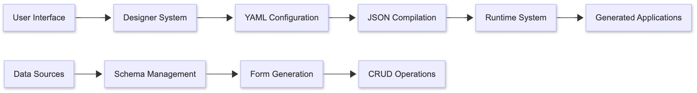

Ak'sara Initiative
Advancing Indonesia Digital Literacy through accessible, locally-developed software solutions
View Project DocumentationOur Mission
Ak'sara, draws from the Sanskrit word for "character" or "alphabet," which holds a deep connection to Indonesian culture. We believe that just as every story is built from individual letters, the best applications are crafted from well-written code.
Our philosophy is simple: we compose, not just code. Like the ancient scripts of the Nusantara archipelago, each line of code is a fundamental character, which, when thoughtfully arranged, forms a powerful instruction that brings visions to life.
Ak'sara Initiative is meant to building Indonesia's digital independence through a comprehensive ecosystem of open-source software tools, reducing dependency on expensive foreign solutions while fostering local technical expertise.
Technical Foundation & Architecture
Advanced SvelteKit architecture powering the Aksara IS no-code platform
Core Projects
Complete project documentation with interactive presentations and downloadable proposals
Aksara IS
Svelte-based no-code platform
Enable Indonesian businesses to create custom applications without coding expertise. Features drag-and-drop builder, Indonesian language interface, and offline capabilities.
Timeline: 12-18 months to MVP
Aksara Writer
Modern markdown converter - NOW PUBLISHED!
Indonesian-focused markdown to document converter with VS Code integration. Features 4 professional themes, template insertion, and business templates. Export to PDF, PPTX, HTML.
Release: v0.1.2 with VSCode auto-preview and improved styling

MerdekaOS
Arch Linux-based distribution
Lightweight, Indonesian-optimized operating system for offices and developers. Pre-configured for Indonesian languages and bundled with our software ecosystem.
Timeline: 12-18 months
Vision & Potential Impact
üáÆüá© Economic Independence
Working toward reducing Indonesia's dependency on expensive foreign software solutions, contributing to technological sovereignty and local economic growth.
üíº Ecosystem Development
Building foundation for sustainable Indonesian tech ecosystem development, starting with accessible no-code tools and expanding to comprehensive solutions.
üìà Digital Accessibility
Democratizing access to business software for Indonesian SMEs through affordable, locally-relevant solutions that understand our language and culture.

The Mind Behind the Vision
As a dedicated developer working to advance Indonesia's digital independence, I've built solid technical foundations for three transformative projects. While working solo presents challenges, the commitment to creating locally-relevant solutions drives continuous progress toward Indonesia's technological sovereignty.
ü§ù Partnership Opportunities
Looking for collaboration with Indonesian hardware manufacturers and technology companies to accelerate development of locally-optimized software solutions. From hardware partnerships to technical collaboration - let's explore how we can build Indonesia's tech ecosystem together. (See detailed partnership proposals in planning documents)
Why Partner With Us Now?
üîß Proven Technical Foundation
All three projects have working prototypes and sophisticated architectures. We're not starting from zero - we're ready to scale.
üéØ Clear Market Opportunity
64.2M Indonesian SMEs need affordable digital solutions. First-mover advantage in Indonesian-focused no-code and AI markets.
üöÄ Immediate ROI Potential
Hardware partnerships can generate immediate market differentiation and revenue sharing opportunities with proven demand.
Ready to Transform Indonesian Technology Together?
From a single Ryzen AI laptop sponsorship to full ecosystem partnerships - let's build Indonesia's digital future step by step.
Join Our Mission
Ready to be part of Indonesia's digital transformation? Let's build the future together.
I'd love to hear from you! Choose the best way to reach out based on your interest:
Interested in funding or sponsoring the initiative? Let's discuss partnership opportunities.
sponsor.aksara@tuta.comWant to contribute code, ideas, or technical expertise? Join our growing community.
contribute.aksara@tuta.comExploring business collaborations, integrations, or strategic partnerships?
partner.aksara@tuta.comMedia inquiries, interviews, or press coverage? I'm happy to share the story.
relations.aksara@tuta.comI personally read and respond to every email. Expect a thoughtful reply within 24-48 hours.